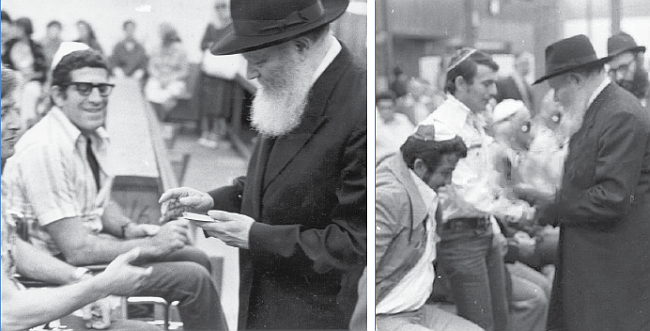

IDF’s Finest Visit the Rebbe

The discovery that followed was far more horrendous: glancing under the sheet, he saw that both his legs had been amputated, the right leg at the knee, the left at mid-thigh.
The day before, Joseph, who was serving on reserve duty in Zahal (the Israeli Defense Forces), was patrolling the Golan Heights with several other soldiers when their jeep hit an old Syrian land mine. Two of his comrades were killed on the spot. Another three suffered serious injury. Joseph’s legs were so severely crushed that the doctors had no choice but to amputate them.
Aside from the pain and disability, Joseph was confronted with society’s incapacity to deal with the handicapped. “My friends would come to visit,” he recalls, “sustain fifteen minutes of artificial cheer, and depart without once meeting my eye. My mother would come and cry, and it was I, who so desperately needed consolation, who had to do the consoling. My father would come and sit by my bedside in silence — I don’t know which was worse, my mother’s tears or my father’s silence.
“Returning to my civilian profession as a welder was, of course, impossible, and while people were quick to offer charity, no one had a job for a man without legs. When I ventured out in my wheelchair, people kept their distance, so that a large empty space opened up around me on the busiest street corner.”
When Joseph met with other disabled veterans he found that they all shared his experience: they had given their very bodies in defense of the nation, but the nation lacked the spiritual strength to confront their sacrifice.
“In the summer of 1976,” Joseph tells, “Zahal sponsored a tour of the United States for a large group of disabled veterans. While we were in New York, a Lubavitcher chassid came to our hotel and suggested that we meet with the Lubavitcher Rebbe. Most of us did not know what to make of the invitation, but a few members of our group had heard about the Rebbe and convinced the rest of us to accept.
“As soon as they heard we were coming, the Chabadniks sprang into action, organizing the whole thing with the precision of a military campaign. Ten large commercial vans pulled up to our hotel to transport us and our wheelchairs to the Lubavitch headquarters in Brooklyn. Soon we found ourselves in the famous large synagogue in the basement of 770 Eastern Parkway.
This was on the 23rd of Menachem Av.
“Ten minutes later, a white-bearded man of about 70 entered the room, followed by two secretaries. As if by a common signal, absolute silence pervaded the room. There was no mistaking the authority he radiated.
“We had all stood in the presence of military commanders and prime ministers, but this was unlike anything we had ever encountered. This must have been what people felt in the presence of royalty. An identical thought passed through all our minds: Here walks a leader, a prince.
“He passed between us, resting his glance on each one of us and lifting his hand in greeting, and then seated himself opposite us. Again he looked at each of us in turn. From that terrible day on which I had woken without my legs in the Rambam Hospital, I have seen all sorts of things in the eyes of those who looked at me: pain, pity, revulsion, anger.
“But this was the first time in all those years that I encountered true empathy. With that glance that scarcely lasted a second and the faint smile on his lips, the Rebbe conveyed to me that he is with me — utterly and exclusively with me.
“The Rebbe then began to speak, after apologizing for his Ashkenazic-accented Hebrew. He spoke about our ‘disability,’ saying that he objected to the use of the term.
“ ‘If a person has been deprived of a limb or a faculty,’ he told, ‘this itself indicates that G-d has given him special powers to overcome the limitations this entails, and to surpass the achievements of ordinary people. You are not “disabled” or “handicapped,” but special and unique, as you possess potentials that the rest of us do not.
“ ‘I therefore suggest,’ he continued, adding with a smile ‘— of course it is none of my business, but Jews are famous for voicing opinions on matters that do not concern them — that you should no longer be called nechei Yisrael (“the disabled of Israel,” our designation in the Zahal bureaucracy) but metzuyanei Yisrael (“the special of Israel”).’
“He spoke for several minutes more, and everything he said — and more importantly, the way in which he said it — addressed what had been churning within me since my injury.
“In parting, he gave each of us a dollar bill, in order — he explained — that we give it to charity in his behalf, making us partners in the fulfillment of a mitzvah. He walked from wheelchair to wheelchair, shaking our hands, giving each a dollar, and adding a personal word or two.
“When my turn came, I saw his face up close and I felt like a child. He gazed deeply into my eyes, took my hand between his own, pressed it firmly, and said ‘Thank you’ with a slight nod of his head.
“I later learned that he had said something different to each one of us. To me he said ‘Thank you’ — somehow he sensed that that was exactly what I needed to hear.
“With those two words, the Rebbe erased all the bitterness and despair that had accumulated in my heart. I carried the Rebbe’s ‘Thank you’ back to Israel, and I carry it with me to this very day.” ■
Reprinted from “Helathy in Mind,Body and Spirit” vol. 1 ch. 6
Beis Moshiach (staff). "IDF’s Finest Visit the Rebbe." Beis Moshiach, no. 1179 (August 22, 2019).